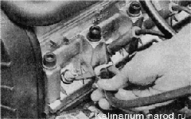
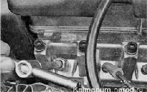

СВЕЧИ ЗАЖИГАНИЯ ДВИГАТЕЛЯ 1,6i — ЗАМЕНАСвечи зажигания следует заменять через каждые 30 000 км пробега или при выходе их из строя, если двигатель стал работать неустойчиво на холостом ходу На двигателе 1,б1следует применять свечи зажигания А17ДВРМ или их зарубежные аналоги - LR15YC (BRISK «SUPER») и WR7DCX (BOSCH), Для выполнения работы потребуется специальный торцовый ключ для свечей зажигания на 21 мм. Совет Свечи удобно заменять поочередно. Последовательность выполнения 1. Снимаем высоковольтный провод со свечи первого цилиндра 2. Протираем ветошью и обдуваем сжатым воздухом от шинного насоса место установки свечи зажигания (чтобы песчинки не попали в цилиндр после удаления свечи). 
3. Торцовым ключом для свечей зажигания на 21 мм отворачиваем свечу. 
4. Перед установкой свечи зажигания набором круглых щупов проверяем зазор между ее электродами . Зазор должен быть 1,0—1,1 мм. При проверке зазора плоскими щупами результаты замеров будут неправильными. 5. Регулируем зазор подгибанием бокового электрода. Во избежание повреждения резьбы в головке блока цилиндров предварительно следует завернуть свечу от руки и уже после этого затянуть, вставив вороток в удлинитель ключа. Момент затяжки свечи 30—40 Н-м. 6. Заворачиваем свечу в головку блока цилиндров. 7. Аналогично заменяем свечи остальных цилиндров. |